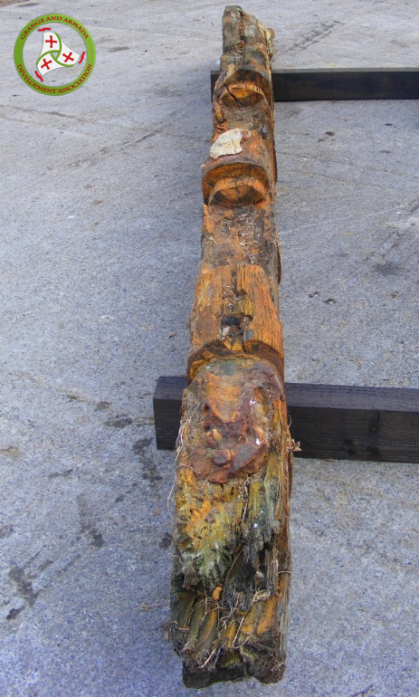
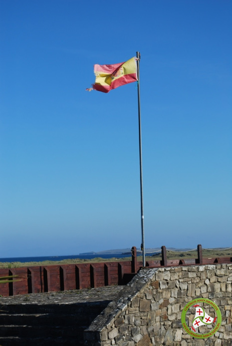
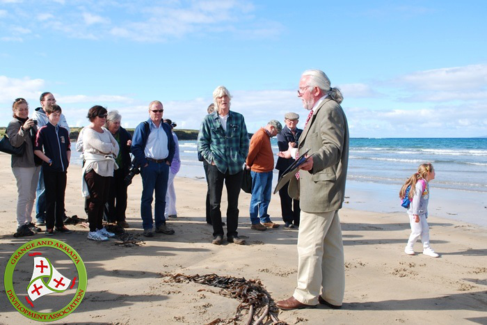

Streedagh Strand
The Streedagh Wrecks
La Lavia
A Venetian Trader of 728 tons, she was commandeered in Feb 1588 while unloading a cargo of sugar at Lisbon. Armed with 25 guns, she served as Almiranta or vice-flagship of the Levant squadron. Her crew comprised of 71 sailors and she carried 271 soldiers according to the Lisbon muster list.
Of the people on board at Streedagh:
- Capt. Francisco De Cuellar; under arrest and facing sentence of death for disobeying orders, most famous survivor of the Streedagh wrecking, author of the famous letter or carta.
- Martin De Aranda; Judge Advocate General of the Armada-the supreme legal authority of the fleet, protector of De Cuellar, died by drowning at Streedagh.
- Don Diego Enriquez, "the hunchback", colonel or camp master and commander of La Lavia, made it ashore in an enclosed ship's boat that landed wrong side up on the beach entombing all within - a tragedy vividly described by De Cuellar.
- The son of the Count of Villa Franca, died on the beach in aforementioned ship's boat.
La Juliana
A Sicilian Merchantman of 860 tons, she was requisitioned in Palermo in 1586 and armed with 32 guns, she had a crew of 65 sailors and 290 soldiers. She carried some of the siege train assembled and loaded at Lisbon to assist in the invasion of England. (as did the Trinidad Valencera, wrecked at Kinnagoe Bay, Co. Donegal) Her original Home Port was Barcelona and the intact rudder viewed by divers in 1985 was identified as of Catalan design and construction. Her captain was Don De Aranada, presumed drowned at Streedagh, and also on board was Pedro Blanco who escaped the wrecking and entered the service of Hugh O Neill, Earl of Tyrone as his bodyguard and trusted servant.
Santa Maria de Visón
A Ragusan Merchantman, (modern Dubrovnik in Croatia) of 666 tons and armed with 18 guns, she had a crew of 70 sailors and 236 soldiers. When the fleet reassembled at La Corunna she may have been designated as a hospital ship (medical supplies were transferred from another hospital ship which was unseaworthy) and the number of people she carried at the wrecking at Streedagh may have varied due to inter ship transfers, and the attrition rate due to disease and hardship. Her commander was a Captain Bartolo, presumed perished at Streedagh.
  